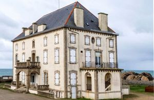
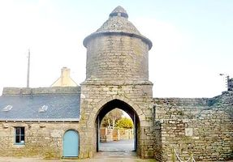
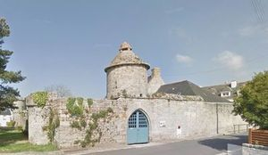
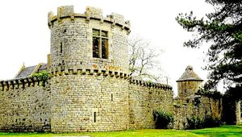
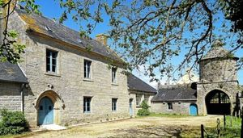
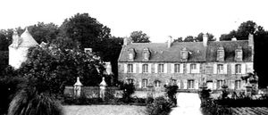

Recensement Jean-Claude Truffet






| Département | 29 — Finistère |
| Canton | Pont-l |
| Commune | Guilvinec-Penmarc |
| Type d'édifice | Château |
| Période d'origine | XVIXIX |
| Coordonnées GPS | 47° 48' 46" Nord, 4° 20' 12" Ouest Lestrédiagat à Tréffiagat grav 6 |
Deux châteaux dans cet article Goeland et Kergoz , à trois Km de distance. GOELANDS, construit en 1888, vient d'être mise en vente sur le site Agorastore, par son actuel propriétaire la ville de Courbevoie. Avec sa vue sur mer inégalable, cette propriété a été érigée par un médecin niçois fortuné, Gustave Salavy. Revendue plusieurs fois, la demeure devint un hôtel en 1900, avant d'être acquise par Paul Lederlin, un industriel du textile, dans les Vosges, sénateur des Vosges puis sénateur de la Corse, sous la IIIe République, qui en fit sa résidence de loisirs, puis par la famille Friant, propriétaire de la Biscuiterie des Filets Bleus (première biscuiterie industrielle de Bretagne, en 1950). Depuis son acquisition par la ville de Courbevoie en 1956, la villa était devenue un centre de vacances. Aussi appelée " Maner ar Parizian ", la propriété est composée d'un bâtiment principal dit le " Château " de 867 m² (qui comporte des bureaux, des sanitaires, des chambres, une salle polyvalente et des caves, d'un bâtiment annexe de 1.344 m² destiné à l'hébergement et aux activités (dortoirs, sanitaires, salles de classe et activités, cuisine, réfectoire, infirmerie), et d'un bâtiment servant de locaux techniques et atelier de 161 m². L'ensemble dispose d'un terrain de 13500 m² non constructible. le LESTREDIAGAT à Tréffiagat du XVIIe siècle, manoir remplace un édifice plus ancien ; la tour date du XIVe siècle.
KERGOZ, avant la Révolution de 1789, lancienne seigneurie de Kergoz en Plomeur, avec son manoir fortifié, sa gentilhommière, son colombier où nichaient des centaines de pigeons, son moulin à vent et la maison du meunier, ses fontaines et ses lavoirs, ses marais salants, ses terres chaudes à céréales et ses prairies de Traon Ar Maner représentant 480 journaux,soit plus de 235 hectares daujourdhui, répartis de Men Meur à Pouliguéner et de Lostendro à Kerlan autour des chaumières de ses paysans, exploitées sous le régime du domaine congéable, tout cela appartenait au dernier noble dAr Gelveneg, le Comte de Derval, qui vivait plutôt dans son hôtel de Quimper. Propriété de la famille de Derval, le manoir de Kergoz est une vaste demeure seigneuriale qui appartient désormais à la municipalité du Guilvinec. Cette demeure a conservé son haut pigeonnier daté du XVIe siècle. Ce pigeonnier fut installé au-dessus du porche d'entrée de la vaste enceinte ponctuée de deux tours couronnées de créneaux. De belles fenêtres de style Renaissance ornent les murs. Une des tours d'enceinte a été restaurée. Inscription par arrêté du 11 mai 1932. A cette date, Kergoz était cité comme maison noble à Plomeur.Le mur denceinte des remparts en pierres taillées de granite local a près dun mètre de large. Assez pour inclure côté sud une niche que la légende a prise pour un souterrain qui devait rejoindre le tumulus néolithique de Poulguen, par-dessous létang de Saint-Trémeur. Disons tout de suite que cela est absurde. Mais la tendance actuelle des conteurs nest-elle pas de rechercher des faits magiques ou mystérieux en histoire.
Goelands; Famille de Gustave Salavy, Kergoz ; Famille de Derval
"
Deux châteaux dans cet article Goelands grav-1 et Kergoz grav 2_3_4_5 , à trois Km de distance. Goelands à Penmach GPS : 47° 48' 46" Nord, 4° 20' 12" Ouest Lestrédiagat à Tréffiagat grav 6